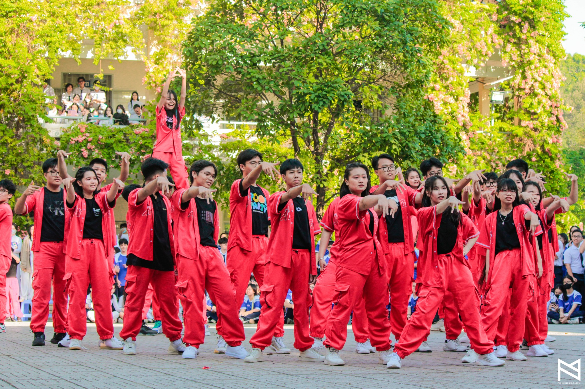

Vào một ngày cuối tháng Ba rực rỡ, sân trường THPT Phú Nhuận (TP.HCM) đã trở thành tâm điểm của sự sôi động và nhiệt huyết khi Hội thi "Dân vũ - Flashmob" diễn ra với sự tham gia của hàng trăm học sinh. Trong không khí tưng bừng ấy, tập thể lớp 11A3 đã để lại dấu ấn khó phai với màn trình diễn mãn nhãn, không chỉ thể hiện tài năng mà còn lan tỏa tinh thần đoàn kết và sức trẻ đầy cảm hứng.

Flashmob 2023 - 2024
Hội thi "Dân vũ - Flashmob" không chỉ là một hoạt động ngoại khóa thông thường mà còn là sân chơi để các lớp phô diễn cá tính, sự sáng tạo và tinh thần đồng đội. Với chủ đề hướng đến việc khơi dậy năng lượng tích cực, cuộc thi đã thu hút đông đảo học sinh từ các khối lớp tham gia, biến sân trường thành một "bữa tiệc" âm nhạc và cảm xúc thực thụ. Từ những bước nhảy mạnh mẽ, dứt khoát đến những đội hình được sắp xếp đầy sáng tạo, mỗi tiết mục đều mang một màu sắc riêng, phản ánh rõ nét bản sắc của từng tập thể.
Trong số đó, lớp 11A3 đã trở thành tâm điểm chú ý với màn trình diễn được chuẩn bị kỹ lưỡng và đầy tâm huyết. Ngay từ khi giai điệu đầu tiên vang lên, các thành viên của lớp đã nhanh chóng cuốn khán giả vào không gian sôi động bằng những động tác nhảy điêu luyện. Từng bước chân đồng đều, từng cái vung tay dứt khoát hòa quyện cùng âm nhạc đã tạo nên một tiết mục không chỉ đẹp mắt mà còn tràn ngập năng lượng. Không dừng lại ở kỹ thuật, đội hình của 11A3 còn gây ấn tượng bởi sự sáng tạo trong cách sắp xếp, chuyển đổi linh hoạt, mang đến cảm giác mới mẻ và bất ngờ cho người xem.
Chia sẻ về quá trình chuẩn bị, bạn Anh Vy - lớp trưởng 11A3 - cho biết: "Để có được màn trình diễn này, cả lớp đã tập luyện suốt hơn hai tuần. Mỗi buổi tập đều kéo dài hàng giờ, có khi đến tận tối muộn. Nhưng không ai than vãn, bởi tất cả đều muốn mang đến một tiết mục thật ấn tượng, không chỉ để giành giải mà còn để khẳng định tinh thần của 11A3." Những giọt mồ hôi rơi trên sàn tập, những lần tranh luận để chọn nhạc hay chỉnh sửa động tác đã được đền đáp xứng đáng bằng tràng pháo tay không ngớt từ khán giả và ban giám khảo.
Trong số đó, lớp 11A3 đã trở thành tâm điểm chú ý với màn trình diễn được chuẩn bị kỹ lưỡng và đầy tâm huyết. Ngay từ khi giai điệu đầu tiên vang lên, các thành viên của lớp đã nhanh chóng cuốn khán giả vào không gian sôi động bằng những động tác nhảy điêu luyện. Từng bước chân đồng đều, từng cái vung tay dứt khoát hòa quyện cùng âm nhạc đã tạo nên một tiết mục không chỉ đẹp mắt mà còn tràn ngập năng lượng. Không dừng lại ở kỹ thuật, đội hình của 11A3 còn gây ấn tượng bởi sự sáng tạo trong cách sắp xếp, chuyển đổi linh hoạt, mang đến cảm giác mới mẻ và bất ngờ cho người xem.
Chia sẻ về quá trình chuẩn bị, bạn Anh Vy - lớp trưởng 11A3 - cho biết: "Để có được màn trình diễn này, cả lớp đã tập luyện suốt hơn hai tuần. Mỗi buổi tập đều kéo dài hàng giờ, có khi đến tận tối muộn. Nhưng không ai than vãn, bởi tất cả đều muốn mang đến một tiết mục thật ấn tượng, không chỉ để giành giải mà còn để khẳng định tinh thần của 11A3." Những giọt mồ hôi rơi trên sàn tập, những lần tranh luận để chọn nhạc hay chỉnh sửa động tác đã được đền đáp xứng đáng bằng tràng pháo tay không ngớt từ khán giả và ban giám khảo.

Dân vũ 2022 - 2023
Khi ánh đèn sân khấu khép lại, những giai điệu sôi động vẫn còn vang vọng đâu đó trong tâm trí của các học sinh THPT Phú Nhuận. Hội thi "Dân vũ - Flashmob" không chỉ là một sự kiện mà còn là biểu tượng cho sức trẻ, sự đoàn kết và khát vọng khẳng định bản thân của thế hệ học sinh đang tràn đầy nhiệt huyết. Với những gì đã thể hiện, lớp 11A3 và các tập thể khác đã chứng minh rằng, khi có đam mê và sự đồng lòng, không gì là không thể.
Hội thi khép lại, nhưng dư âm của nó chắc chắn sẽ còn đọng mãi trong lòng mỗi người tham gia. Đó là những ngày tháng tuổi trẻ rực rỡ, nơi các em học sinh không chỉ nhảy theo điệu nhạc mà còn nhảy theo nhịp đập của trái tim mình, để lại dấu ấn không thể phai mờ trong hành trình trưởng thành. THPT Phú Nhuận, với những sự kiện như thế này, đang từng ngày khẳng định mình là nơi nuôi dưỡng không chỉ tri thức mà còn cả đam mê và tinh thần sống tích cực của thế hệ trẻ.
Hội thi khép lại, nhưng dư âm của nó chắc chắn sẽ còn đọng mãi trong lòng mỗi người tham gia. Đó là những ngày tháng tuổi trẻ rực rỡ, nơi các em học sinh không chỉ nhảy theo điệu nhạc mà còn nhảy theo nhịp đập của trái tim mình, để lại dấu ấn không thể phai mờ trong hành trình trưởng thành. THPT Phú Nhuận, với những sự kiện như thế này, đang từng ngày khẳng định mình là nơi nuôi dưỡng không chỉ tri thức mà còn cả đam mê và tinh thần sống tích cực của thế hệ trẻ.